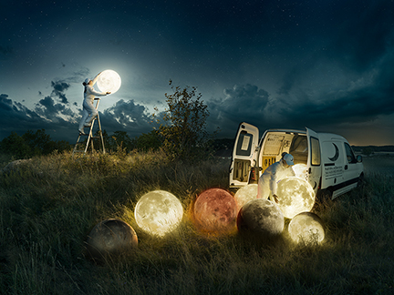
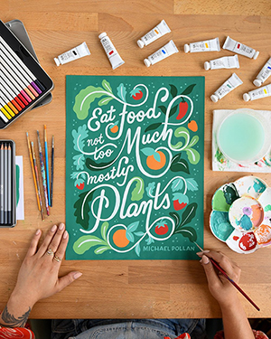

home
inspiration
top fives
Hello, My name is Ling Zhou
Here are three designers who have inspired me
Erik Johansson

He is my favorite visual artist. He has created many imaginative
surreal photography works. His works combine many surreal yet
realistic ideas, excellent light and shadow expression,
realistic post production, and each piece has unexpected gains.
He taught me to think creatively from many different perspectives.
Lauren Hom

She is a graphic designer from Southern California.
I really like her font design and illustrations.
Her works always use bright colors and beautiful
typography that exudes a sense of life, always
giving me a strong urge to follow the production
process
Kurzgesagt

It is a website that I discovered from videos of
biology classes. Its original intention was to
spread science through interesting visuals.
However, they chose colorful and highly
saturated colors to create their videos
and website, which were eye-catching and
impressive. I gained a lot of color
inspiration from it, and also learned
a lot of scientific knowledge.